Scene 1 · Bathroom stalls
The stall dividers, doors, and floor tiles appear in both views.
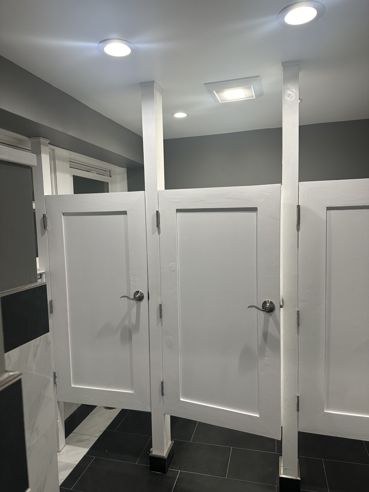
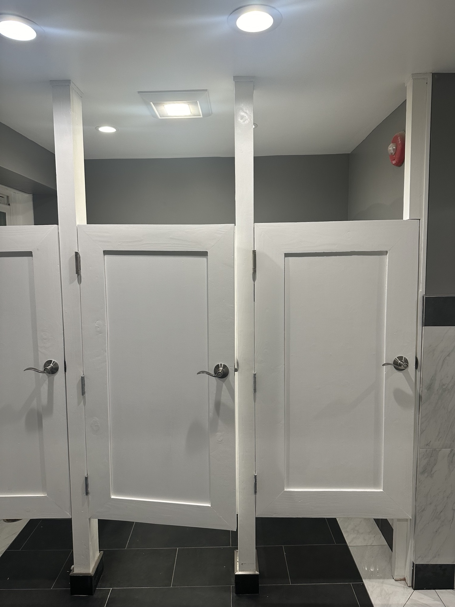
Part A uses manually matched points to estimate homographies, rectify planar objects, and blend overlapping photos. Part B automatically detects, describes, and matches image features, then uses four-point RANSAC to estimate homographies and stitch three mosaics.
I photographed three different scenes in overlapping pairs. Each pair was taken from the same spot. I rotated the camera slightly to the left and then slightly to the right without changing the center of projection.
Keeping the camera position fixed while rotating it gives the two views a similar center of projection. Their shared scene details provide corresponding points for alignment.
The stall dividers, doors, and floor tiles appear in both views.


The framed poster, wall, and doorway provide shared details across the pair.
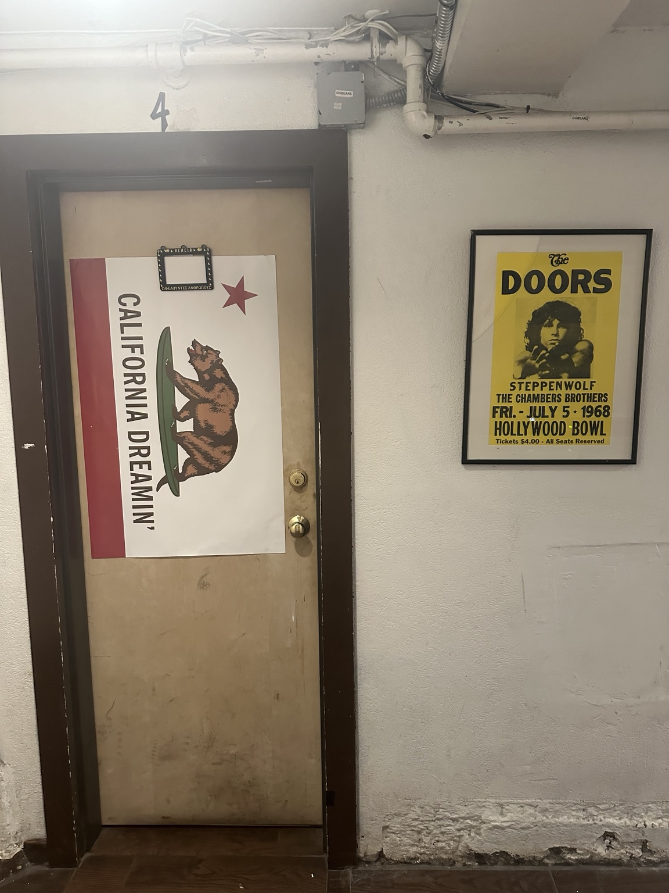
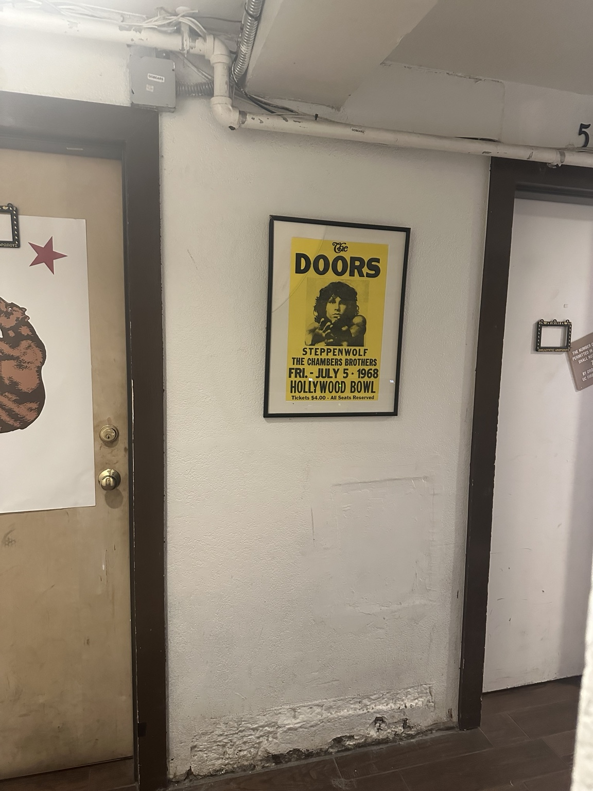
The fire alarm, wall fixtures, and doors are visible in both views.
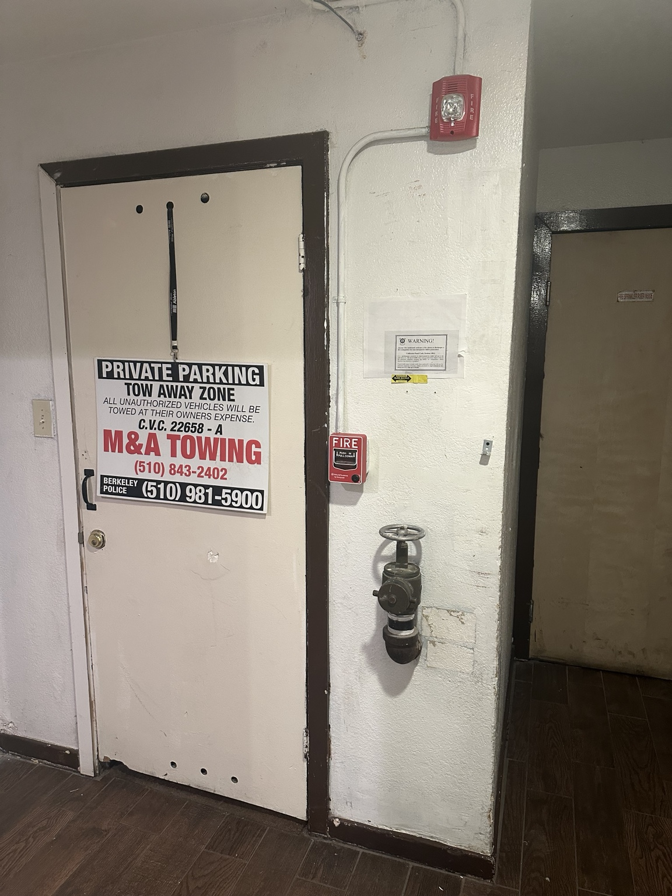
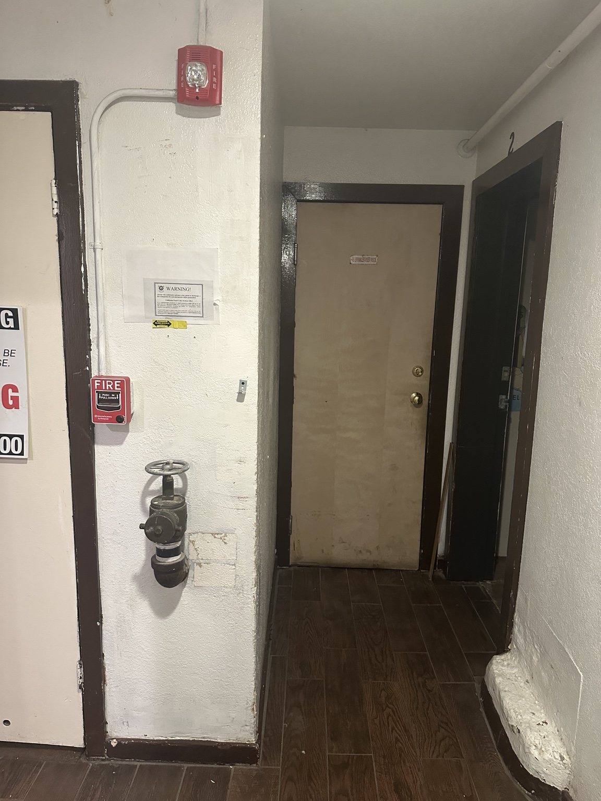
I selected 29 point correspondences between the two poster photographs using the CS180 correspondence tool. The figure overlays the photos with colored lines connecting matching scene features.
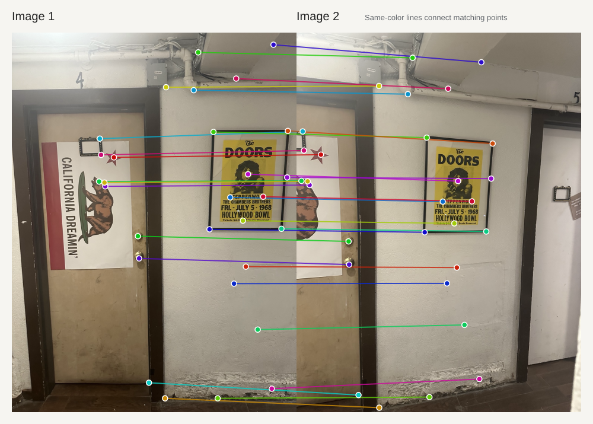
A homography maps a point (x₁, y₁) in Image 1 to its match (x₂, y₂) in Image 2:
Fixing the bottom-right entry to 1 leaves eight unknowns. Each correspondence contributes two rows to the linear system A h = b:
Using all 29 correspondences, computing H gives this homography from Image 1 to Image 2:
Mean reprojection error: 4.63 pixels. Maximum reprojection error: 22.34 pixels.
The Star Wars poster has four obvious corners. I selected these corners in top-left, top-right, bottom-right, and bottom-left order and mapped them to an 800 by 1200 pixel rectangle. I then transformed the image corners to determine the output canvas area. From there, I iterated through the pixels in this canvas and multiplied each pixel's homogeneous coordinates by the inverse homography to find its source location. For nearest-neighbor sampling, I rounded the source coordinates to select the nearest pixel. I also used bilinear warping, where I kept the decimal source coordinates and calculated a weighted average of the four surrounding pixels based on their horizontal and vertical distances.
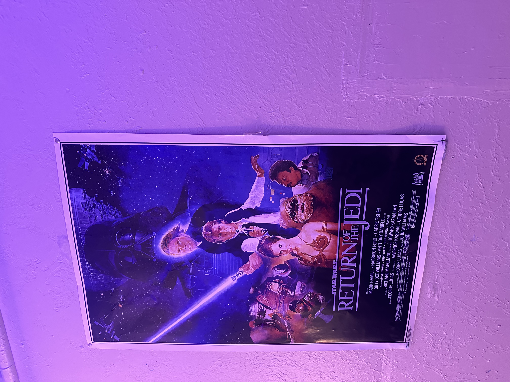
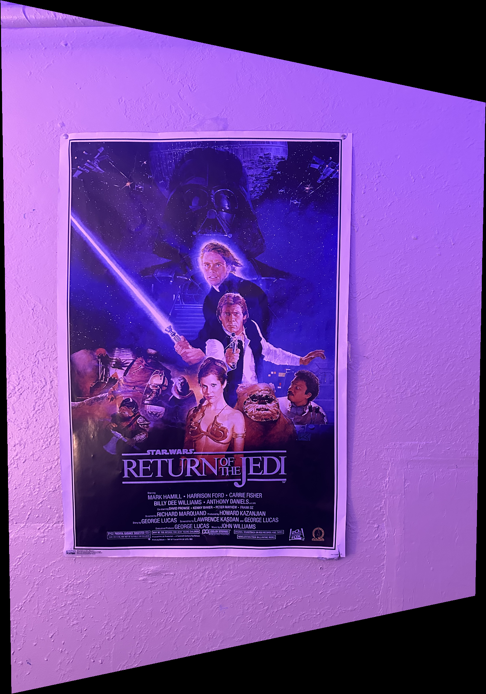
I selected the outer corners of the hanging poster and mapped them to an 800 by 1280 pixel rectangle.
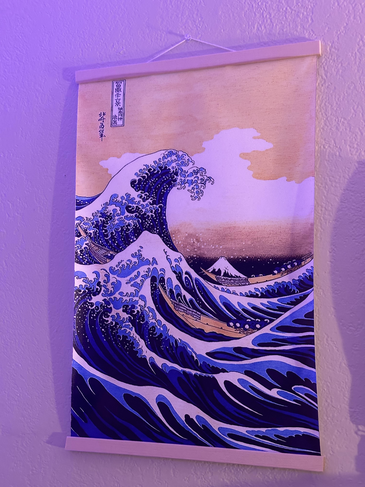
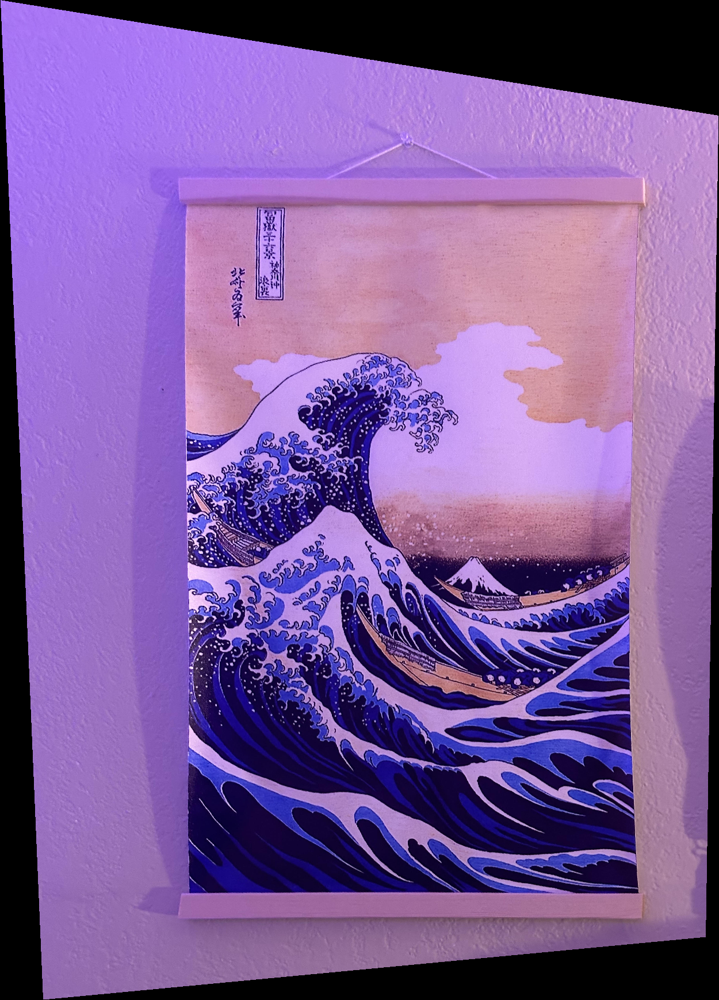
I treat integer coordinates as pixel centers, with (0, 0) at the center of the top-left pixel. The canvas bounds come from the transformed image corners. Output locations that map outside the source image remain black. The target rectangles specify the poster regions; the complete output canvases also include the warped surroundings.
Both methods gave me the same rectified geometry, and at this size, the results look almost identical. Nearest-neighbor sampling takes the color of a single source pixel, which keeps the original pixel values but can make edges look jagged. Bilinear sampling blends nearby pixels, making text and edges look smoother but sometimes slightly blurry. Neither method can fix the curves already present in the physical paper.
| Image | Nearest neighbor | Bilinear |
|---|---|---|
| Star Wars | 10.90 seconds | 23.72 seconds |
| Wave print | 8.60 seconds | 19.50 seconds |
In my loop-based implementation, bilinear sampling took about twice as long as nearest neighbor. This makes sense because bilinear interpolation combines four source pixel colors for each output pixel, while nearest neighbor only needs one. The exact timings also depend on the image size and the computer running the code.
Both warpImageNearestNeighbor and warpImageBilinear are implemented in proj4a.py. Running the file generates all four rectifications and prints the time taken by each warp.
Simply placing one warped image on top of another can leave a visible seam, especially when the lighting or alignment is slightly different. To make the transition smoother, I use feather blending. Each image gets a weight of 1 at its center, which gradually decreases to 0 toward its edges. This lets the images blend together instead of creating a sharp boundary.
I keep Image 1 fixed and warp Image 2 into its coordinate system. I calculate the canvas size using the corners of both images and use bilinear interpolation when warping. In areas where the images overlap, I combine their colors using a weighted average:
If only one image covers a pixel, it keeps that image's color. Pixels outside both images stay black. I calculate the feather weights in each image's original coordinates and use a very small positive weight at valid edge pixels.
I also reuse warpImageBilinear to get the warped image, feather weights, and canvas position. Then makeMosaic combines everything onto one canvas. Feather blending helps hide seams, but it doesn't fix alignment errors, parallax, or perspective stretching.
For this mosaic, I manually selected 16 matching point pairs between the two bathroom photos. The doors line up fairly well, although there's still some ghosting around the ceiling fixtures and upper supports.
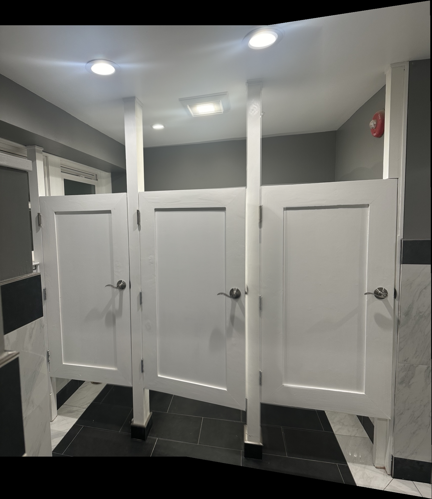
I used 29 manually selected correspondences to create this mosaic. After warping the images with bilinear interpolation, I combined them using normalized feather weights. The black areas are regions where neither photo provides any image data.
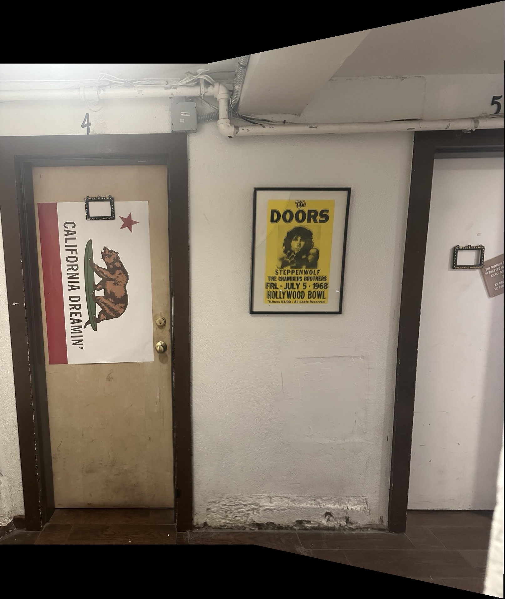
For the final mosaic, I used seven cleaned matching point pairs. I also removed four leftover Star Wars point pairs from the exported correspondences.
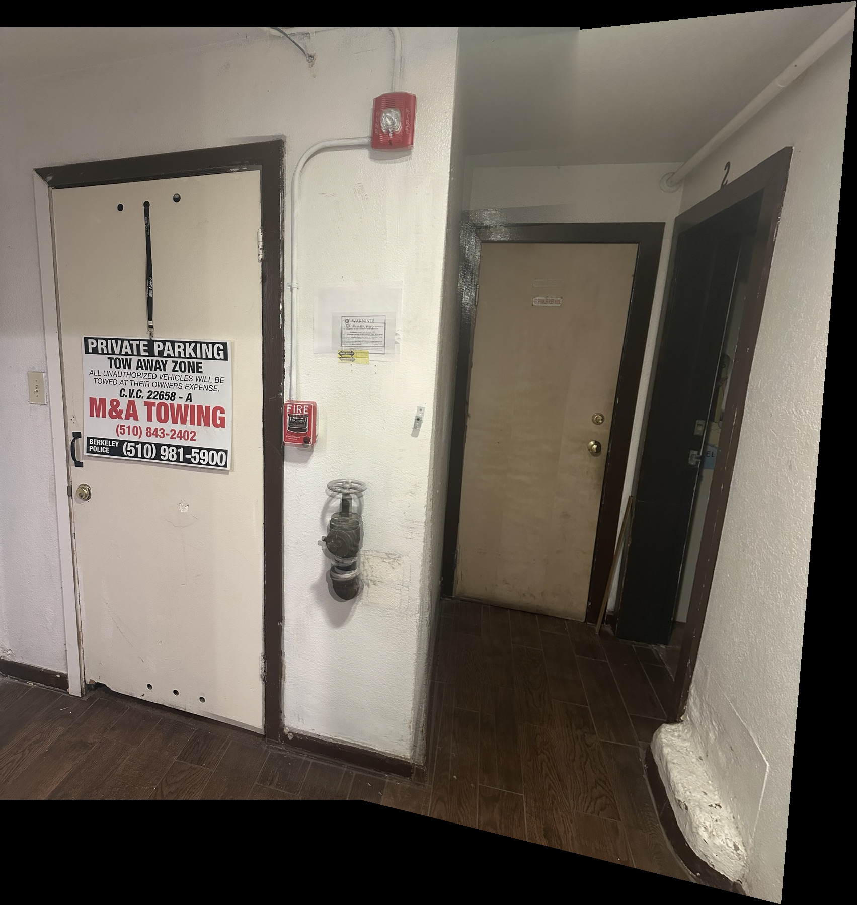
This mosaic turned out a little worse than the other two. There are noticeable double edges around the warning sign, pipe, and door frame, even after feather blending. This is likely because some of my point matches weren't perfectly accurate, along with possible parallax from objects being at different depths. Better point matches could help, but a single homography can't perfectly align everything if the camera moved between the two shots.
In proj4a.py, my makeMosaic function reuses warpImageBilinear and the featherWeight helper. For each scene, I load the two images and their saved point correspondences, calculate the homography, warp the images, and save the final blended mosaic.
I run the instructor's single-scale Harris detector on grayscale versions of the six Part A photos, without sub-pixel refinement. The detector uses the response 2 det(M) / (trace(M) + epsilon), Gaussian scale sigma = 1, and excludes a 20-pixel border. I additionally keep only positive corner responses above 1% of the maximum response in each image.
Harris can produce many nearby candidates in textured regions such as poster lettering. To choose points that cover more of the image, I apply adaptive non-maximal suppression (ANMS) with c = 0.9 and retain 500 candidates per image.
For each candidate, ANMS measures the distance to the nearest sufficiently stronger candidate. A candidate near a stronger one receives a small radius, while one farther away receives a larger radius. Candidates with no sufficiently stronger neighbor receive an infinite radius. Keeping the largest radii encourages spatial coverage; ties are broken by corner score and then candidate index.
Each comparison shows all thresholded Harris candidates on the left, the 500 strongest scores in the middle, and 500 ANMS-selected candidates on the right. The middle and right panels use the same number of points so the effect of the selection rule can be compared directly. Click a figure to inspect it at full resolution.
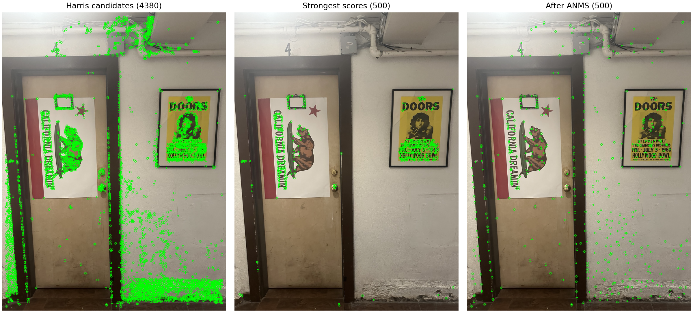
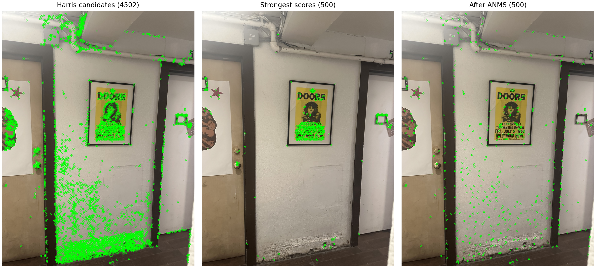
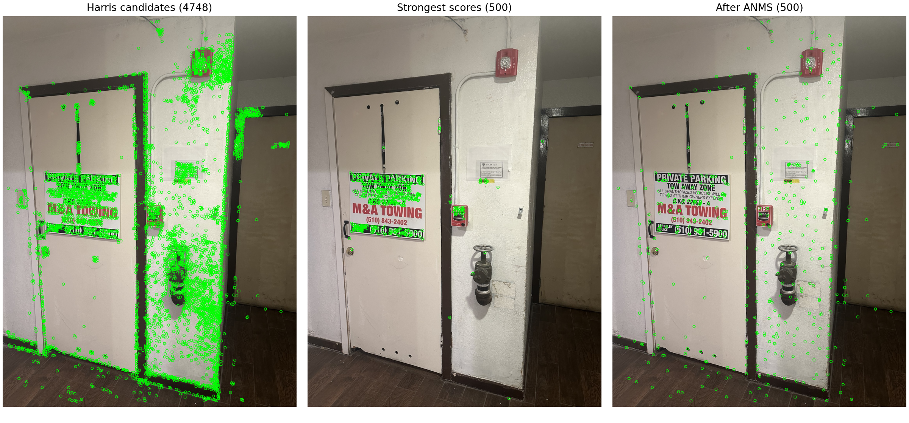
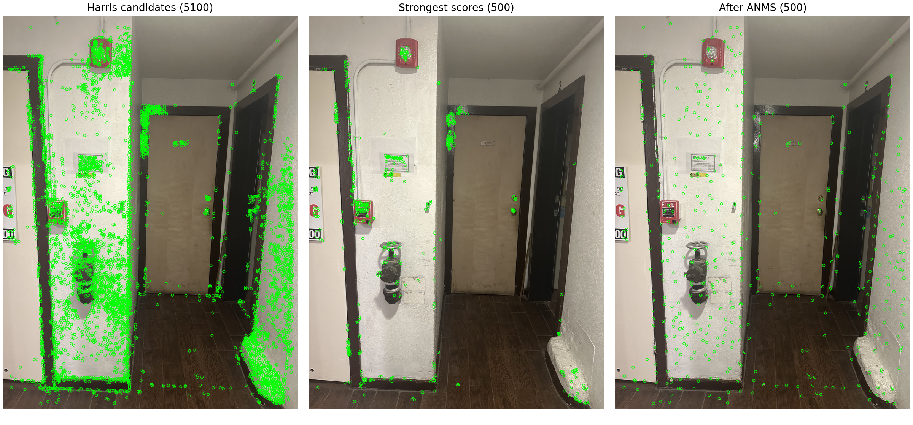
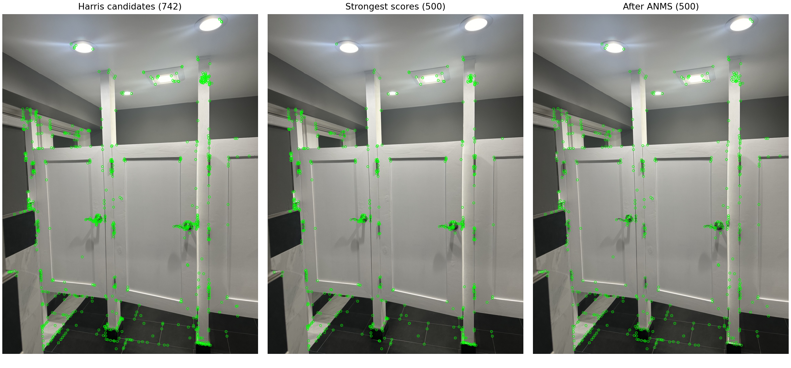
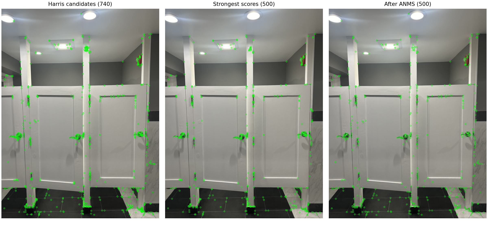
The score-only selection concentrates points on high-contrast details, especially text. ANMS also retains candidates around other structures, giving broader coverage while still selecting detected corners. Blank walls remain sparse because ANMS selects from existing candidates rather than creating new ones.
The unmodified course starter is included as harris.py (the instructor-provided starter). My wrapper, ANMS implementation, and figure generation are in proj4b.py. Run python3 proj4b.py to reproduce these figures; dependencies are in requirements-b.txt. The ANMS selection follows Section 3 of Brown et al., Multi-Image Matching using Multi-Scale Oriented Patches.
Each ANMS-selected corner is described by an axis-aligned 8 by 8 grid of grayscale intensities sampled from a 40 by 40 pixel region. This follows the five-pixel sample spacing in Section 4 and Figure 4 of Brown et al.'s MOPS paper, with the assignment's simplifications: no orientation alignment, no multiscale detection, and no Haar wavelet transform.
For each corner, I extract a 40 by 40 grayscale patch and smooth it with a Gaussian filter (sigma = 2 pixels) to reduce aliasing. I sample rows and columns 2, 7, 12, 17, 22, 27, 32, and 37 of the blurred patch, producing an 8 by 8 descriptor with five-pixel spacing. This simple integer grid uses patch smoothing rather than the paper's higher-pyramid-level sampling.
After sampling, each descriptor has its own mean subtracted and is divided by its own standard deviation. Nonconstant descriptors therefore have mean zero and standard deviation one, reducing sensitivity to additive brightness changes and positive contrast scaling. A small denominator floor prevents division by zero for constant patches.
Each figure shows eight source neighborhoods above their corresponding normalized descriptors. Each descriptor is displayed with its own grayscale range and enlarged without interpolation so the individual samples remain visible.
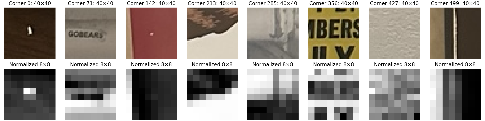
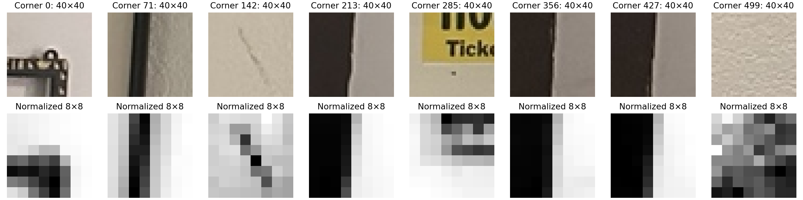
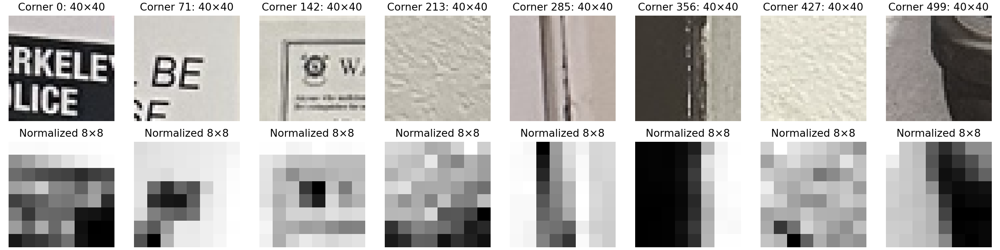
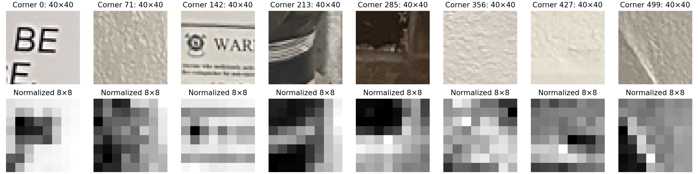
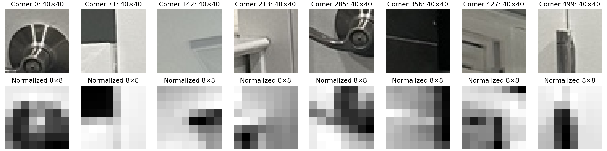
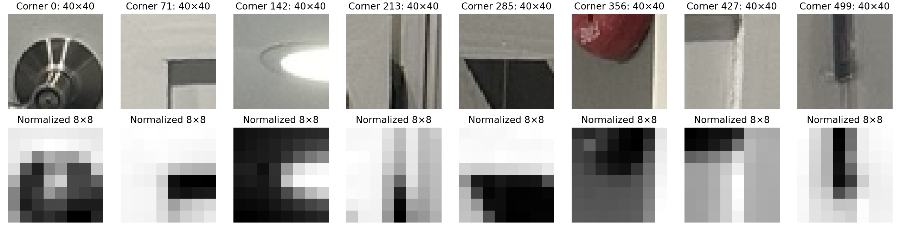
The extraction and normalization functions are implemented in the submitted proj4b.py. Call run_b2("posters_1.jpg") to regenerate an example. Saved descriptor arrays are available above.
For each descriptor in the first image, I compare its 64 normalized intensity values with every descriptor in the second image. The matching error is the sum of squared differences (SSD): smaller error means more similar patches. I sort these errors to identify the best and second-best candidates.
I use the two-neighbor ratio test described in Section 5.1 and Figure 6b of the MOPS paper. A match is kept only when its best SSD is less than 0.8 times its second-best SSD. The threshold applies to squared distances; it is an implementation choice rather than a claim that the paper prescribes 0.8. Testing the inequality without division also rejects the ambiguous case where both errors are zero.
This test favors a distinctive best match over two similarly good alternatives. Matching runs from image 1 to image 2 without a mutual-match or one-to-one constraint, so multiple source features may choose the same destination. No wavelet indexing or multi-image outlier model is used. These are candidate matches before RANSAC; incorrect matches can remain and will be addressed in B.4.
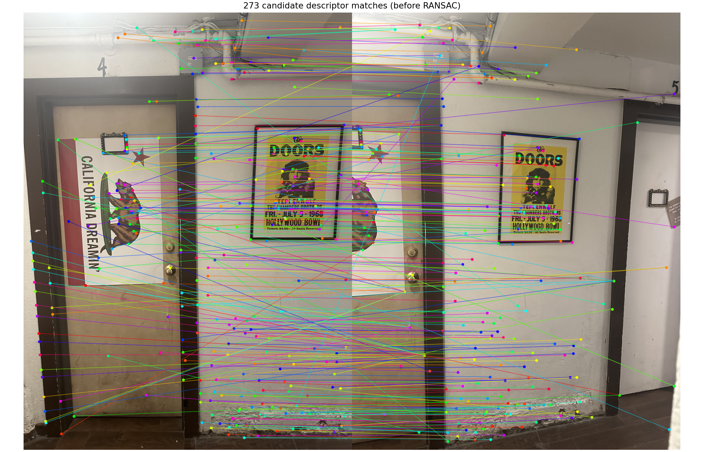
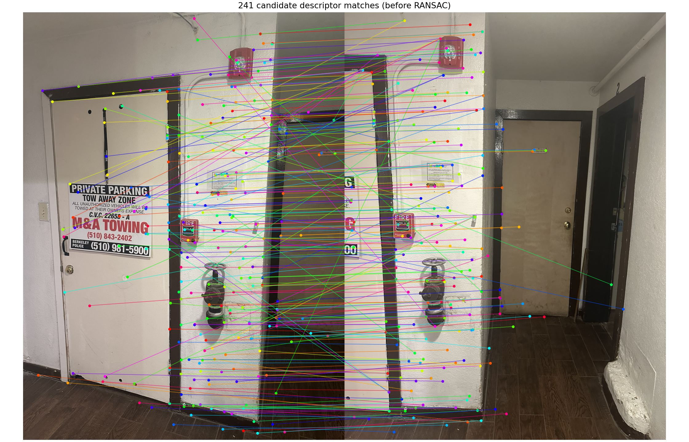
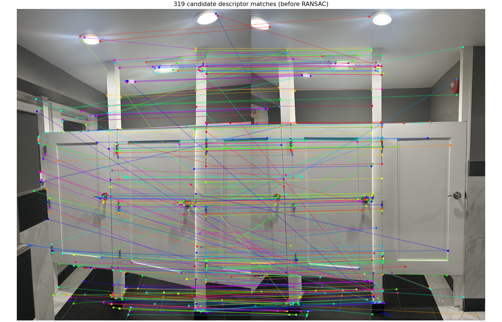
The code submission includes the feature matching implementation, plotting helper, and run_b3 runner. The saved match indices are available above.
Descriptor matching produces candidate correspondences, including incorrect ones. I implement four-point RANSAC from scratch: sample four match pairs, estimate a homography using my Part A solver, and test how many of all the candidate pairs agree with that transformation. No library RANSAC or homography estimator is used.
I run 2,000 trials with random seed 0. Collinear samples and singular homographies are skipped. A match is an inlier when the Euclidean distance between its projected image-1 point and its actual image-2 point is less than 3 pixels. I keep the largest inlier set, breaking ties by total inlier error, then refit using all inliers with up to three rounds of reclassification.
For automatic stitching, the homography is estimated entirely from detected and matched features. The manual correspondences are used only for the Part A comparison. Both methods keep image 1 fixed, inverse-warp image 2 using bilinear interpolation, and use the same feather blending. Black areas are outside the source images.
| Scene | Candidate matches | Inliers | Mean error | Median error |
|---|---|---|---|---|
| Poster hallway | 273 | 153 | 1.30 px | 1.15 px |
| Hallway doors | 241 | 102 | 1.38 px | 1.29 px |
| Bathroom stalls | 319 | 183 | 1.24 px | 1.00 px |
These errors measure agreement with the fitted model; they are not an independent measure of matching accuracy. Remaining misalignment can come from imperfect corner localization, parallax, lens distortion, or the limits of a single homography.
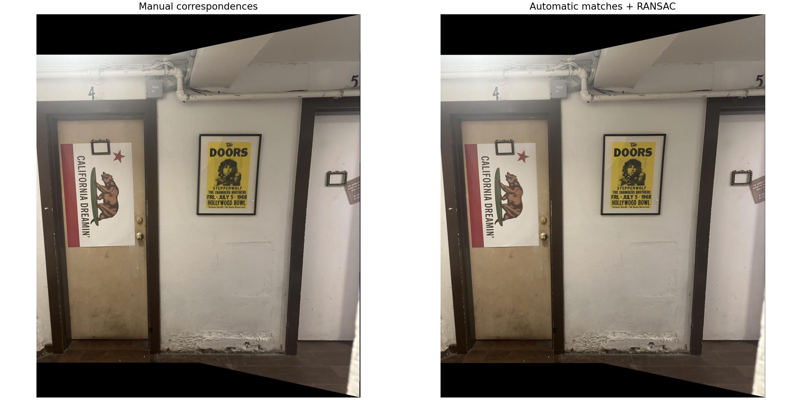
The automatic and manual mosaics have similar geometry. The poster boundaries and lettering align well; small residual differences remain near the ceiling and at some fine details.
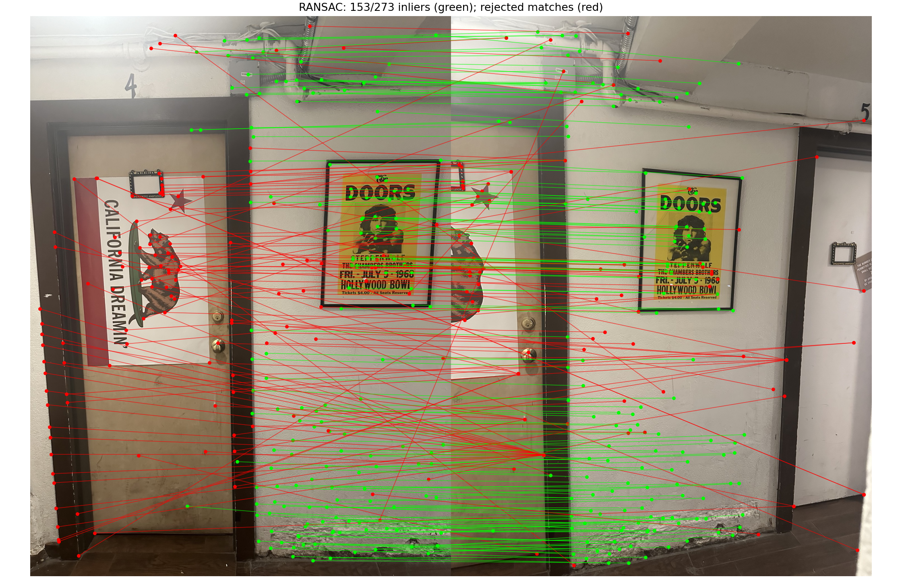
[ 1.39900037, -0.00284028, -462.88431540] [ 0.26746047, 1.25072383, -177.35637443] [ 0.00034699, -0.00000245, 1.00000000]
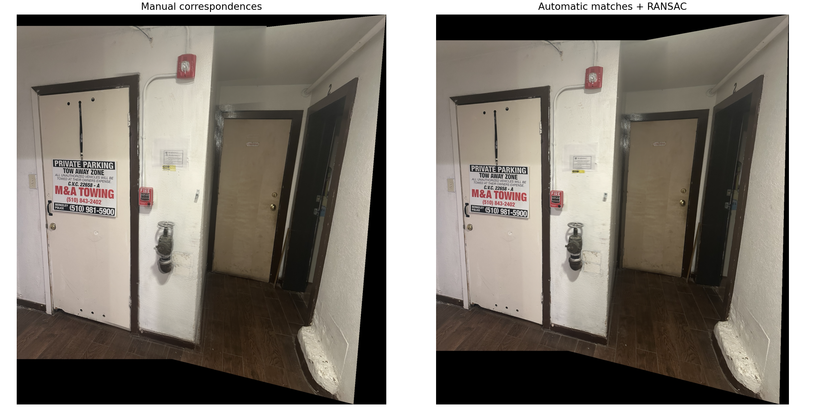
The automatic alignment visibly reduces the double edges around the warning sign, fire alarm, and pipe compared with the seven-point manual alignment. Some perspective stretching and residual edge differences remain.
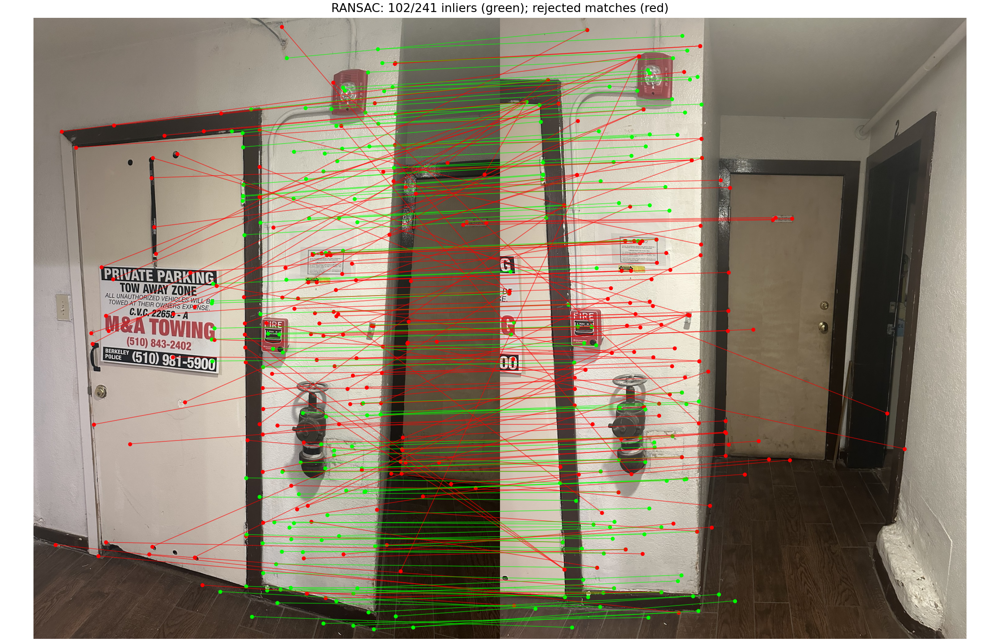
[ 1.47550082, 0.06272878, -663.56992534] [ 0.24653294, 1.35681306, -254.87509777] [ 0.00037594, 0.00003285, 1.00000000]
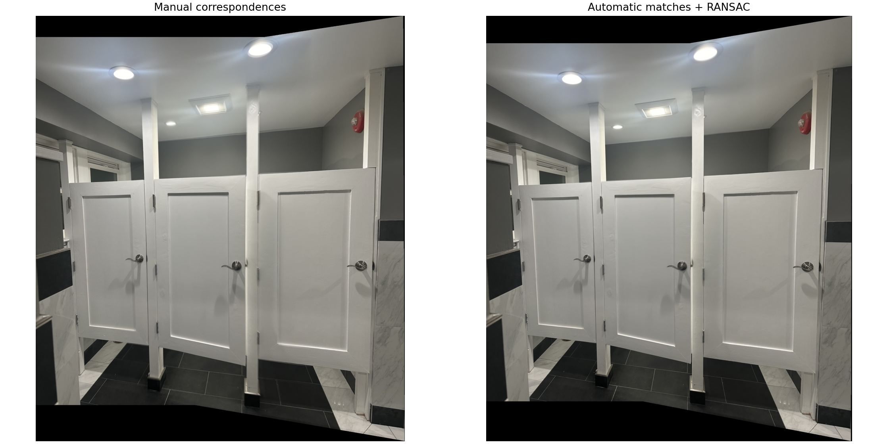
Both methods align the main stall doors, while fine structures and ceiling fixtures can retain small double edges. Feather blending reduces brightness seams but cannot fully remove parallax or geometry errors.
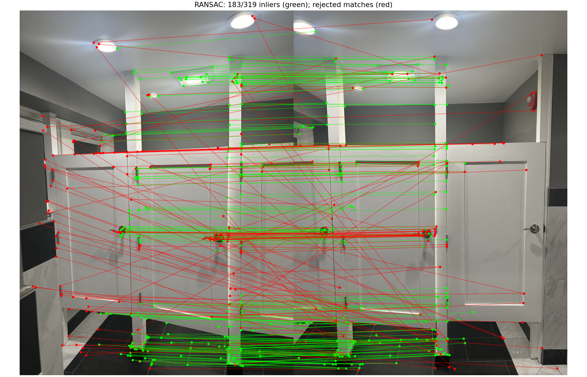
[ 1.35868040, 0.01816023, -455.34060350] [ 0.21055225, 1.24144655, -182.79629235] [ 0.00028887, 0.00001381, 1.00000000]
The code submission includes match_features, project_points, ransac_homography, stitch_automatically, the comparison helper, and run_b4. Run python3 proj4b.py --part b4 to regenerate all three comparisons, or python3 proj4b.py for B.1 through B.4. Part A is retained above.